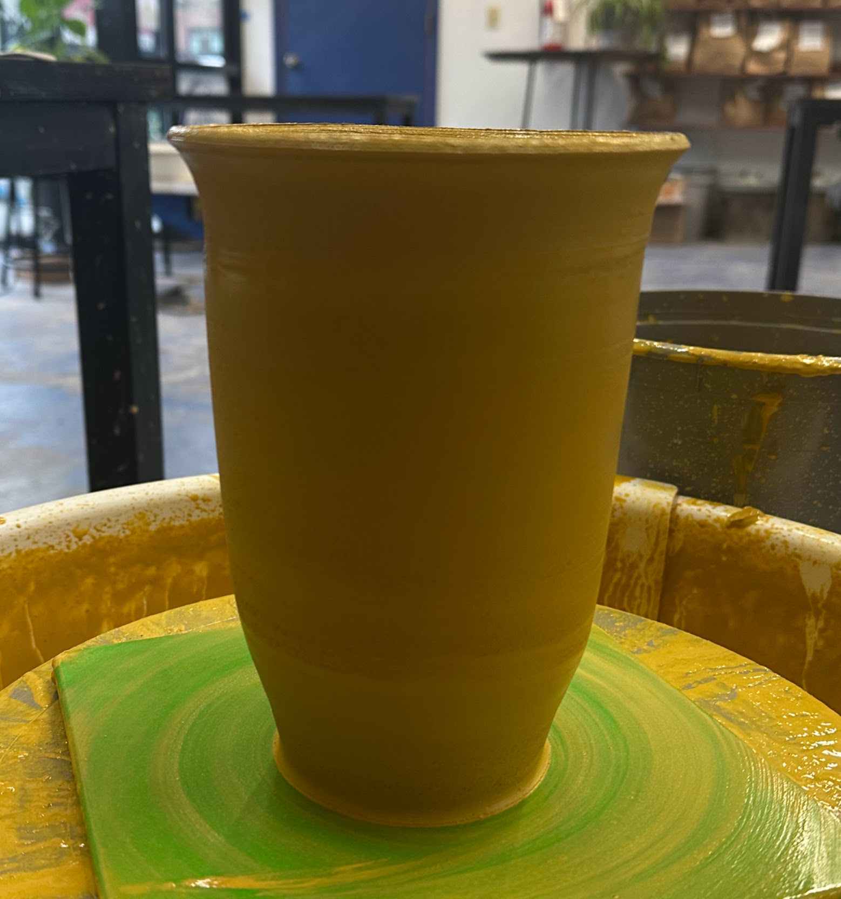

I got to pick a two sets of pots! My pet pots (that's what I call them now lol) and the last set of red
clay. Since the red pots were a little too dry for trimming, I decided to use them to test some new glazes. I
actually really like the white glaze on the red clay, I was not expecting speckles! The Macadamia (yellow) has
always been a wild card; I do like how it looks here (sometimes it gives a more glossy finish). I didn't try lighter
glazes on the red until now, but I'll start giving it a shot a more!

I want to spotlight this pup-pot! I love him so much. I think the studio got a better clear glaze because its feel is almost
buttery; really nice. It's also the perfect size for my Jade plant! I'll be a making more of these, I think when I get the
chance to have a market, I'd love to sell stuff like this!
I didn't take a picture of all the things I trimmed. I was focused on the jars though! I am excited for the garlic
jar, I am planning to use the white glaze I just tested! The top doesn't really slot in, I'll have to try more to
get a better hang of it. This time remembered to add a vent to the egg maker!

And finally, I had an awkward amount of clay left after trimming so I decided to throw it! I did not weigh it, but
I think it was atleast 1.5Kg! It's also tall and didn't collapse! woop woop!
Location: Community Studio | Clay Type: Klamanth Yellow | Average Weight: 1-1.5kg | Goal: Trim some jars